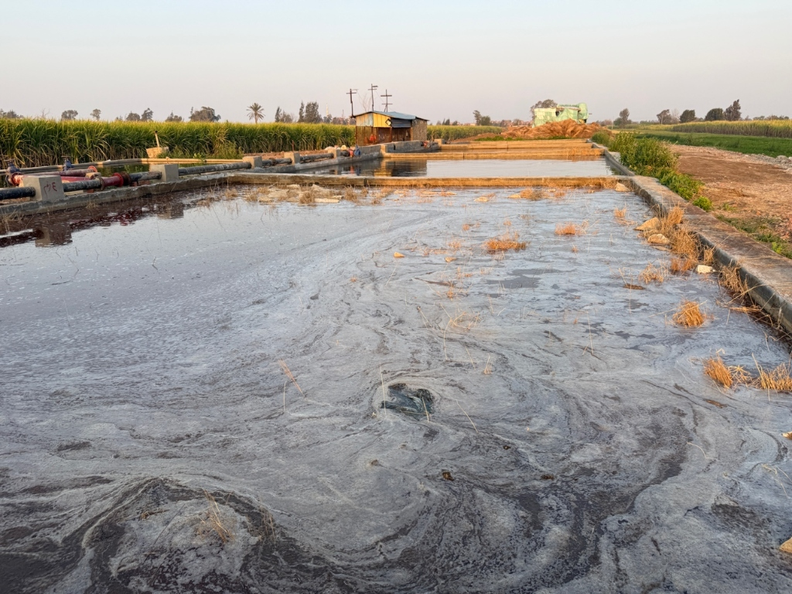

تُعد شبراملس من أشهر القرى في مصر في زراعة وتصنيع الكتان، حيث تتميز بطبيعة خاصة جعلت هذا النشاط جزءًا أساسيًا من حياة سكانها. ومع ذلك، تواجه هذه الصناعة عددًا من التحديات البيئية والاقتصادية التي تؤثر على الأهالي والمزارعين.
“في ساعات الليل المتأخرة، تتحرك الجرارات المحملة بالكتان داخل شوارع قرية شبراملس، بينما يواصل العمال نقل المحصول استعدادًا لتجهيزه داخل المبلات والمصانع.”
ويقول الحاج سامي سرحان، أحد مزارعي الكتان بالقرية: “نبدأ العمل من منتصف الليل حتى السادسة صباحًا لتجنب الزحام، لكن أحيانًا تحدث حوادث بسبب زيادة الأحمال على الجرارات”
زراعة تبدأ في الشتاء:
داخل إحدى الأراضي الزراعية، كان عدد من العمال يجهزون الأرض لزراعة الموسم الجديد، بينما أوضح “المهندس الزراعي أحمد فوزي” أن زراعة الكتان تبدأ سنويًا من 20 أكتوبر حتى منتصف نوفمبر.
المشكلات البيئية والسكنية:
“الأتربة تدخل بيوتنا”
ورغم أهمية صناعة الكتان اقتصاديًا، فإن عددًا من الأهالي يشكون من المشكلات الناتجة عن تخزينه بالقرب من المناطق السكنية.
“القش يدخل البيوت يوميًا، ولا نستطيع ترك النوافذ مفتوحة بسبب الأتربة والروائح”
وفي شارع آخر بالقرية، يقول “مسعد داود”، أحد السكان الذين تضررت بيوتهم: “الكتان مصدر رزق مهم، لكن يجب نقل أماكن التخزين بعيدًا عن البيوت، لأن الوضع أصبح صعبًا مع زيادة عدد المبلات والمخازن”
الحرائق.. الخوف الدائم:
الخطر الأكبر الذي يهدد صناعة الكتان في شبراملس يتمثل في الحرائق، حيث يشهد الأهالي كل عام تقريبًا اندلاع حرائق داخل المخازن أو أماكن التخزين.
“الكتان سريع الاشتعال، وأي شرارة صغيرة قد تتحول إلى كارثة”
أزمة تسويق وغياب الدعم:
ورغم المجهود الكبير الذي يبذله المزارعون، فإنهم يعانون من مشكلات في تسويق المحصول، خاصة مع عدم وجود جهة حكومية تستلم الكتان بشكل رسمي.
“نضطر لبيع المحصول للتجار حسب أسعار السوق، وأحيانًا تكون الأسعار منخفضة ولا تغطي تكلفة الزراعة”
التسميد والرعاية
- يتم التسميد من مرة إلى ثلاث مرات شهريًا حسب الحاجة.
- استخدام أسمدة مثل النترات واليوريا.
- مقاومة الأمراض مثل البياض الدقيقي عن طريق رش مبيدات فطرية كل 15 يومًا.
التسويق
- لا توجد جهة حكومية تستلم الكتان حاليًا.
- يتم بيعه محليًا أو تصديره حسب الأسعار السائدة بالأسواق.
الحصاد
- يتم حصاد الكتان عندما تسقط الأوراق من أسفل الساق.
- يتحول لون الجزء العلوي إلى اللون الأحمر أو البني.
- يتم الحصاد يدويًا أو بالاعتماد على الماكينات الحديثة.
الاستثمار والمنافسة
- وجود عدد كبير من المصانع يؤدي إلى منافسة قوية في السوق.
- بعض المستثمرين ينشئون مصانع ومبلات خاصة لتقليل تكاليف الإنتاج.
- هناك اهتمام مستمر من مستثمرين صينيين بمتابعة الإنتاج والاستثمار في هذا المجال.



أترك تعليقاً...